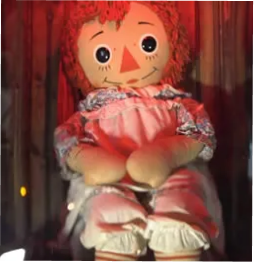
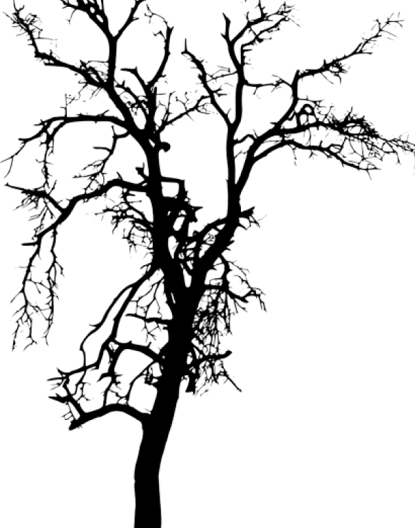

ANNABELLE

Cette histoire remonte dans les années 70, lorsqu’une mere decide d’acheter une poupée de chiffon, venant d’un ouvrage célèbre nommé Raggedy Ann Stories. Par la suite, elle décide de l’offrir à sa fille Donna de 28 ans, qui était à ce moment-là en collocation avec sa meilleure amie,Angie.Au début, rien de tres alarmant,Donna constate seulement qu'elle ne la retrouve jamais dans la position dans laquelle elle l'avait laissée et se dit qu'elle a dû déplacer la poupée par inadvertance. Cependant plus le temps passe, plus les déplacements de la poupée se font fréquents et important. Les filles ont commencés à s’inquiété lorsque la poupée se mit en l’évidation et qu’elles retrouvaient des mots sur des parchemins. elle décident alors d’appeler une médium qui leurs révèle que la poupée est possédée par une fillette de 7 ans ce nommant Annabelle Higgins qui serait morte il y a de longues années. Touchée par son histoire, elles décident de garder la poupée. Cependant Lou,le petit-ami d’Angie Annabelle, est persuadé qu’elle est maléfique et insite pour que les filles s’en débarrasse. Alors qu’elle n’avait jamais été violente auparavent essaya d’étouffer lou et lui laissa des marques de griffure. Donna et Angie finissent par demander de l’aide autour d’elles et on finit par leurs recommandés le couple Warren.
Pour eux,il n'y a jammais eu de Annabelle et donc jammais eu de petite fille. En réalité c'est une entité démoniaque qui a pris possession de la poupée. Entité que Donna et Angie ont autorisée à interagir avec elles suite à la séance avec la médium. Toutes les choses étranges qu'Annabelle fessaient étaient en réalité très symbolique concernant les entités démoniaques explique le couple. En effet, les entités comme on les connaient, c'est-à-dire des "fantômes", des "esprits" n'ont pas les capacités des entités démoniaques. Ainsi ce que la poupée était capable de faire était trop puissant,intense pour une simple entité. Le but de cette entité démoniaque serait de sortir du corps de la poupée et prendre possession d'un humain. Ainsi, le couple Warren décide d'exorciser la poupée le plus rapidement possible. Une fois cela fait, par mesure de sécurité, ils décident de la prendre avec eux afin que les filles puissent reprendre une vie normale. Néanmoins, sur le chemin du retour des Warren, un incident survient. Alors qu'Annabelle est placée sur le siège arrière, les freins de la voiture lâchent peu à peu et celle-ci tremble dans les virages.

Si bien qu'Ed est contraint s'arrêter et de verser de l'eau bénite sur la poupée afin d'être sûr d'arriver sain et sauf. Dans les semaines qui suivent l'arrivée de la poupée chez les Warren, des objets explosent et Annabelle se déplace régulièrement et change même de pièce alors que celle-ci est fermée. L'entité se montre alors de plus en plus menaçante. Pris de court, les warren font appelle à un prêtre mais celui-ci en maltraitant la poupée énnerva l'entité démoniaque. Sur le retour, le prêtre faillit mourir dans un accident de voiture à cause des freins cassés, n'est-ce pas étrange? après cela, les Warren on décidait de mettre Annabelle dans une boite en verre fermée dans une pièce consacrée au objet posséder qui elle est protégée par des sort et pierre et bien sûr fermée à clefs. Lors d'un reportage au domicile Warren, Lorraine avait confié à l'équipe de tournage qu'elle n'osait toujours pas regarder la poupée dans les yeux, même des années plus tard.
texte
texte
